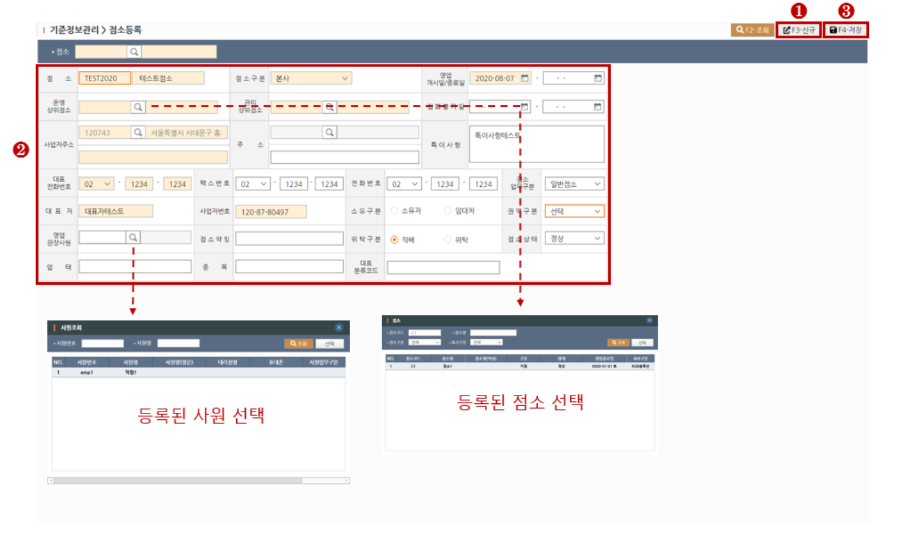
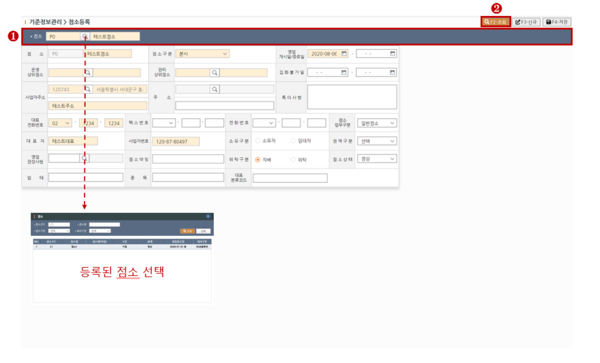

1. 신규 점소 생성하기
> STEP-1 새로운 점소 추가를 원하실 경우 상단의 신규(F3)버튼을 클릭하여 행을 추가합니다.
> STEP-2 점소 기본정보를 입력합니다. 노란색필드는 필수입력입니다.
> STEP-3 기본정보입력을 완료하셨다면 상단의 저장(F4)버튼을 클릭하여 저장합니다.

※ 필드설명 - 점소
[점소]필드의 왼쪽은 점소코드, 오른쪽은 점소명을 입력합니다. 점소코드는 중복으로 저장하실 수 없습니다.
※ 필드설명2 - 점소구분
[점소구분]필드가 "본사"인 경우 [운영상위점소]와 [관리상위점소] 필드는 필수 체크항목에서 제외됩니다.
[점소구분]필드가 "본사"가 아닌경우 [운영상위점소]를 필수로 입력하셔야 하며 점소간의 상하관계가 설정됩니다.
2. 조회하기
> STEP-1 상단의 조회조건에 조회할 점소를 입력합니다.
> STEP-2 상단의 조회(F2)버튼을 클릭하여 조회합니다.
